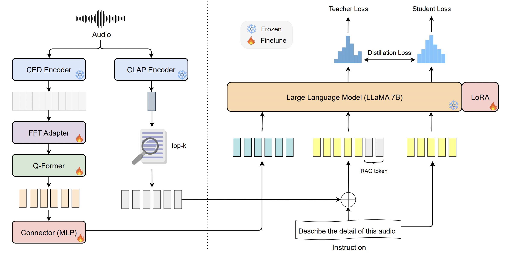

CIKM'25
DistillCaps: Enhancing Audio-Language Alignment in Captioning via Retrieval-Augmented Knowledge Distillation
Thinh Pham*, Nghiem Diep*, Lizi Liao, Binh T Nguyen
A retrieval-augmented knowledge distillation framework for audio captioning that transfers retrieval-enhanced audio-language alignment into a lightweight retrieval-free inference model.